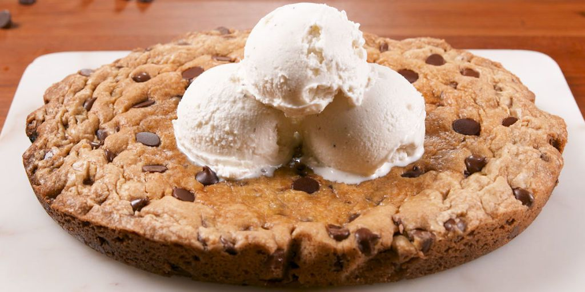
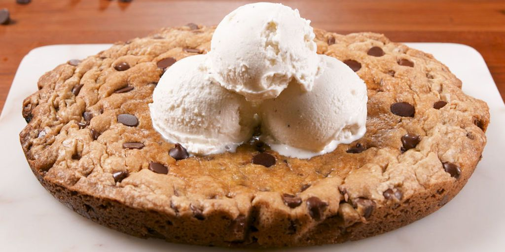

PREP TIME
45 Min
 

45 Min
45 Min
A LOT
Use an ice-cream scoop to make perfectly shaped cookies. Level off the dough on the edge of the bowl for perfectly round cookies. If you didn't think these cookies could get any better, think again! Get creative use with 1/2 cup each of semisweet chocolate chips, peanut butter chips or butterscotch chips instead of the 2 cups semisweet chocolate chips. OMG these are good!
Got questions? Our experts have the answers. Email Me
Probably bad for you, but who cares. MMMMMM COOKIES!!!! nom nom nom
This recipe was altered from Open Source Recipe for more recipes go here.